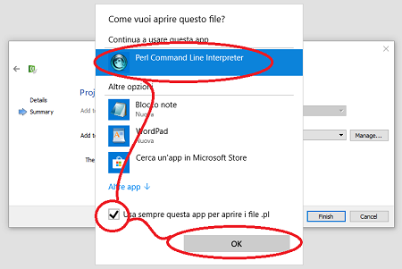

Um eine neue leere Seite hinzuzufügen, auf der Sie mit der Arbeit beginnen können, indem Sie die verschiedenen Komponenten der zu erstellenden Schnittstelle einfügen, gehen Sie wie folgt vor:
Wechseln Sie in den Modus “Edit” (linke Spalte);
Wählen Sie mit der rechten Maustaste den Namen Ihres Projekts (oben);
Wählen Sie “Add New”;
Drücken Sie “Choose”;
Wählen Sie den Namen der Seite und drücken Sie “Next”;
HINWEIS: Denken Sie daran, dass die Seite als page<Seitennummer> (page101) bezeichnet werden sollte.

Win10 kann dieses Fenster anzeigen. Verwenden Sie immer die App: Perl Command Line Interpreter.
Beginnen Sie von Anfang an, um die Seite zu erstellen.

Klicken Sie auf “finish” auf dem Bildschirm “Project Management”;

Bestätigen Sie die Anforderung, um die Dateien “pages.cpp” und “pages.h” überschreiben zu können.

Ab der zweiten Seite müssen Sie die Anforderung zum herunterladen der Dateien “pages.cpp” und “pages.h” (durch Drücken von “yes to all”).
Um eine erstellte Seite zu öffnen, doppelklicken Sie auf die entsprechende Datei im Zweig “Forms” des Projekts.